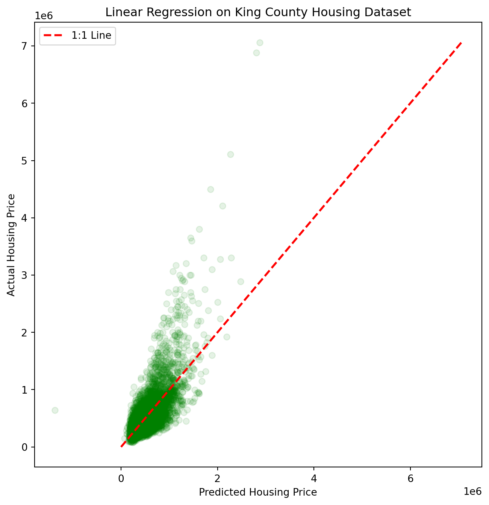
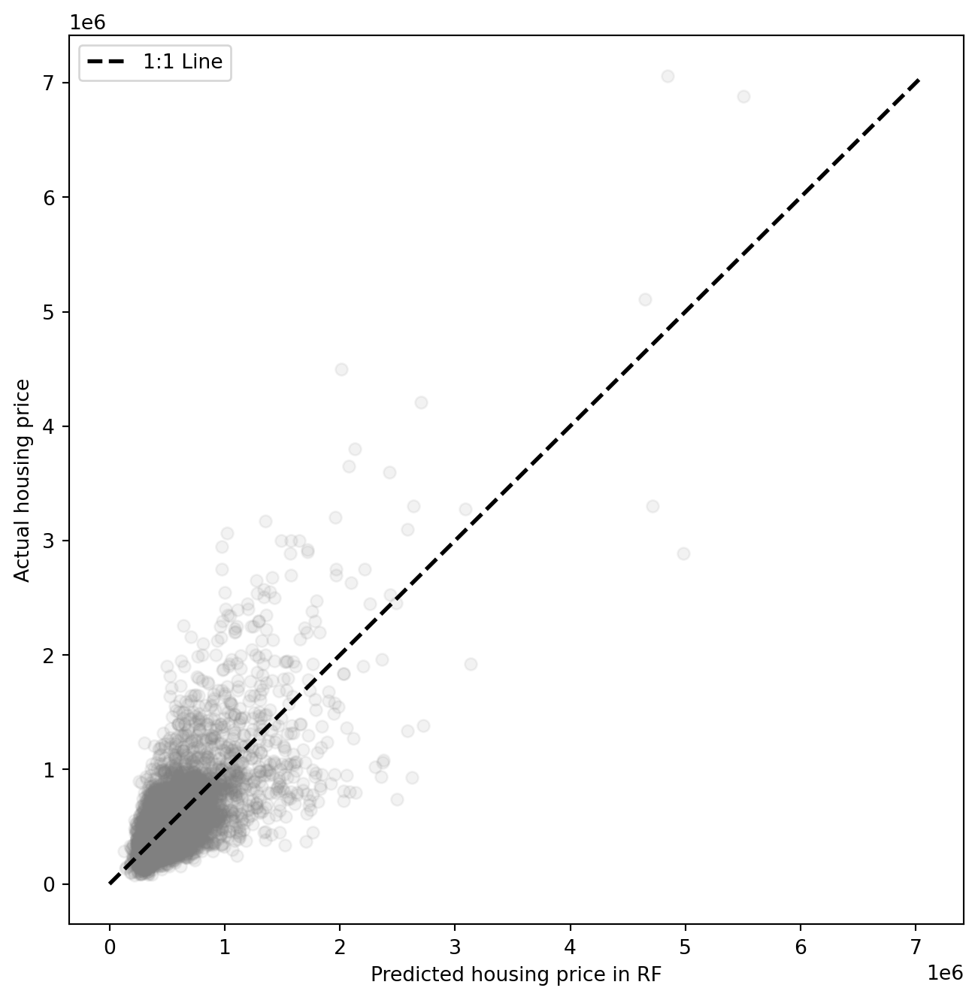

import pandas as pd
import numpy as np
import matplotlib.pyplot as plt
Data= pd.read_csv("kc_house_data.csv")
Data.columns
Data.dropna(inplace=True)Linear Regression is a supervised Machine Learning model in which the model finds the best fit linear line between the independent and dependent variable. In other words, it predicts the output variables based on the independent input variable.
There are two types of linear regression models- Simple and Multiple.
Simple Linear Regression
In the simple regression model, there is only one independent variable and the model finds the linear relationship of it with the dependent variable. The equation of a Simple Linear Regression Model is-
\[ y= \beta_0 + \beta_1 x+ \epsilon_0 \]
Here, y is the dependent variable, \(\beta_0\) is the intercept, \(\beta_1\) is the regression coefficient of the independent variable x, \(\epsilon_0\) is the error term of the regression model.
Multiple Linear Regression
The difference between simple linear regression and multiple regression model is that multiple regression model has more than one independent variables. The equation of a multiple linear regression model is given below-
\[ y = \beta_0+ \beta_1* x_1+ \beta_2 * x_2+ \beta_3 * x_3+.............+\beta_n * x_n+ \epsilon \]
Here, y is the dependent or target variable, \(\beta_0\) is the intercept of the regression line in y axis, \(\beta_1,\beta_2,\beta_3, \beta_n\) are the regression co-efficients of independent variables \(x_1,x_2, x_3, x_n\). \(\epsilon\) indicates the error term of the regression model.
A linear regression model’s main aim is to find the best fit linear line and the optimal values of intercept and coefficients such that the error is minimized. Error is the difference between the actual value and predicted value and the goal is to reduce the difference.
Assumption of Linear Regression
There are six assumption of linear regression-
Linearity: It states that the dependent variable Y should be linearly related to independent variables. This assumption can be checked by plotting a scatter plot between both variables.
Normality: The X and Y variables should be normally distributed. Histograms, KDE plots, Q-Q plots can be used to check the Normality assumption.
Homoscedasticity: The variance of the error terms should be constant i.e. the spread of residuals should be constant for all values of X. This assumption can be checked by plotting a residual plot. If the assumption is violated then the points will form a funnel shape otherwise they will be constant.
Independent/ No Multicollinearity: The variables should be independent of each other i.e. no correlation should be there between the independent variables. To check this assumption, we can use correlation matrix or VIF score. If the VIF score is less than 5 then there is no significant correlation present.
The error terms should be normally distributed. Q-Q plots and Histograms can be used to check the distribution of error terms.
No Autocorrelation: The error terms should be independent of each other. Autocorrelation can be tested using the Durbin Watson test. The null hypothesis assumes that there is no autocorrelation. The value of the test lies between 0 to 4. If the value of the test is 2 then there is no autocorrelation.
The following is an example of Multiple Linear Regression Model of King County, Washington housing data. For the first step, I will identify the correlation between the independent variables while the dependent variable is the housing price. As a first step, I will remove the cells with no values.
To keep the model simple, I will use only three variables- Number of bedrooms, Number of bathrooms, and square footage of the living room to predict the price of housing. Hence, I will remove all the other columns from the dataframe.
drop_columns= ['id', 'date','sqft_lot', 'floors', 'waterfront', 'view', 'condition', 'grade','sqft_above', 'sqft_basement', 'yr_built', 'yr_renovated', 'zipcode','lat', 'long', 'sqft_living15', 'sqft_lot15']
Data.drop(columns=drop_columns,inplace=True)
Data.head(5)| price | bedrooms | bathrooms | sqft_living | |
|---|---|---|---|---|
| 0 | 221900.0 | 3 | 1.00 | 1180 |
| 1 | 538000.0 | 3 | 2.25 | 2570 |
| 2 | 180000.0 | 2 | 1.00 | 770 |
| 3 | 604000.0 | 4 | 3.00 | 1960 |
| 4 | 510000.0 | 3 | 2.00 | 1680 |
Now, I will divide the dataset into training set (70%) and test set (30%). Based on the training set, I will develop the regression model and later predict the housing price based on the model.
import numpy as np
from sklearn.model_selection import train_test_split
from sklearn.linear_model import LinearRegression
from sklearn.metrics import r2_score
# List of independent variables
independent_var = ["bedrooms", "bathrooms", "sqft_living"]
# Extract independent and dependent variables
X = Data[independent_var]
y = Data['price']
# Split the data into training and testing sets
X_train, X_test, y_train, y_test = train_test_split(X, y, test_size=0.3, random_state=42)
# Create a linear regression model
model = LinearRegression()
# Train the model on the training set
model.fit(X_train, y_train)
# Make predictions on the test set
y_pred = model.predict(X_test)
# Evaluate the model performance
def performance_stat(y_test, y_pred):
from sklearn.metrics import r2_score
# Calculate regression metrics
r2 = r2_score(y_test, y_pred)
print(f'R-squared (R²): {r2:.2f}')
# Call the performance_stat function
performance_stat(y_test, y_pred)R-squared (R²): 0.52Here, the \(R^2\) value of 0.52 indicates that about 52% of variability of the housing price can be explained by the three independent variables. Now, I will generate a scatterplot to see the model performance in terms of predicting the actual housing price.
plt.figure(figsize=(8, 8)) # Set a square figure size
# Plot y_pred in red
plt.scatter(y_pred, y_test, color='green', alpha=0.1)
# Plot a 45 degree line for reference
plt.plot([0, y_test.max()], [0, y_test.max()], linestyle='--', color='red', linewidth=2, label='1:1 Line')
plt.xlabel('Predicted Housing Price')
plt.ylabel('Actual Housing Price')
plt.title('Linear Regression on King County Housing Dataset')
plt.legend()
plt.show()
Non-Linear Regression Model
Non-linear regression algorithms are machine learning techniques used to model and predict non-linear relationships between input variables and target variables. These algorithms aim to capture complex patterns and interactions that cannot be effectively represented by a linear model. Here are some popular non-linear regression algorithms. The example of non-linear regression models are-
Decision Trees
Random Forest
Support Vector Regression (SVR)
K-Nearest Neighbors (KNN)
Artificial Neural Networks (ANN)
Gradient Boosting
Polynomial Regression
AdaBoost Regression
Extra Trees Regression
Bayesian Ridge Regression
Kernel Ridge Regression
Applying Random Forest to the housing dataset
Now, I will use Random Forest to predict the housing price based on the number of bedrooms, bathrooms, and square footage of the living room and check which model performed better based on the \(R^2\) value.
from sklearn.ensemble import RandomForestRegressor
# Create and train the Random Forest Regression model
model = RandomForestRegressor(n_estimators=100, random_state=42)
model.fit(X_train, y_train)
# Make predictions on the test set
y_pred_rf = model.predict(X_test)
# Evaluate the model
r2_rf = r2_score(y_test, y_pred)
print(f'R-squared of RF (R²): {r2_rf:.2f}')R-squared of RF (R²): 0.52Here, the \(R^2\) value of the Random Forest regression model is also 52% indicating both of the models performed similarly.
# Visualize the results (2D scatter plot for simplicity)
plt.figure(figsize=(8, 8))
plt.scatter(y_pred_rf, y_test, color='grey', alpha= 0.1)
# Plot a 45 degree line for reference
plt.plot([0, y_test.max()], [0, y_test.max()], linestyle='--', color='black', linewidth=2, label='1:1 Line')
plt.xlabel('Predicted housing price in RF')
plt.ylabel('Actual housing price')
plt.legend()
plt.show()